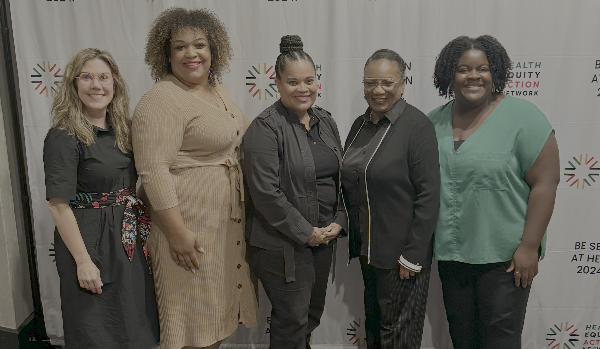
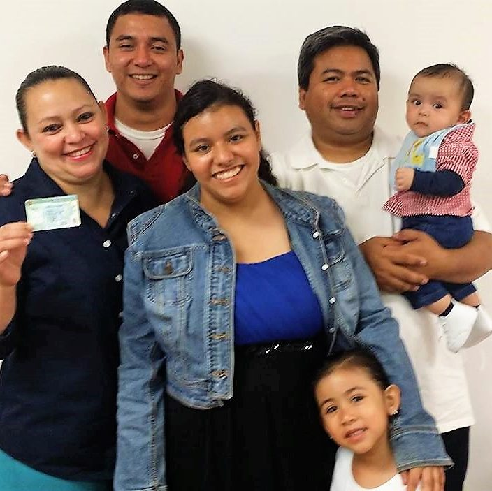
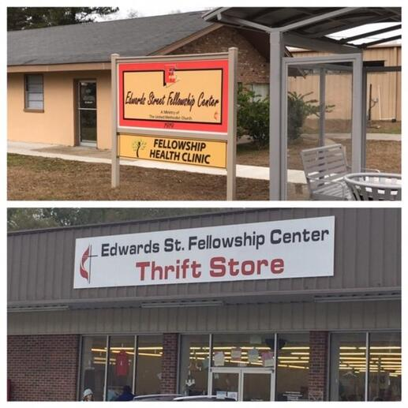

Community-Engaged Research
We support co-learning and bi-directional communication so community priorities remain visible in how work is designed, shared, and improved.
Learn moreForge AHEAD connects communities, partners, and researchers to support cardiometabolic health.
We support co-learning and bi-directional communication so community priorities remain visible in how work is designed, shared, and improved.
Learn moreWe invest in local organizations leading health-focused work that reflects the strengths and needs of their communities.
View recipientsWe provide learning opportunities and practical support that strengthen community and research capacity.
Explore resourcesWe connect academic and non-academic partners across states to build relationships, share strategies, and strengthen community engagement.
Meet partners"Community insight helps make the work more relevant, more respectful, and more useful."Community Advisory Board member
"Community Micro-Grants create space for local organizations to lead work that reflects real needs and trusted relationships."Community Micro-Grant recipient
Our Community Advisory Board brings together community leaders, advocates, and professionals from across Alabama, Mississippi, and Louisiana who help guide Forge AHEAD’s work. CAB members share local insight, lived experience, and practical wisdom to ensure our efforts remain grounded in community priorities.
Meet the CAB




Sign up for updates, stories, and opportunities to stay engaged with Forge AHEAD.
News & updatesLearn how your organization can collaborate with Forge AHEAD and join the Community Coalition.
Join the coalitionTell us what is happening in your community or suggest opportunities for connection.
Share feedback